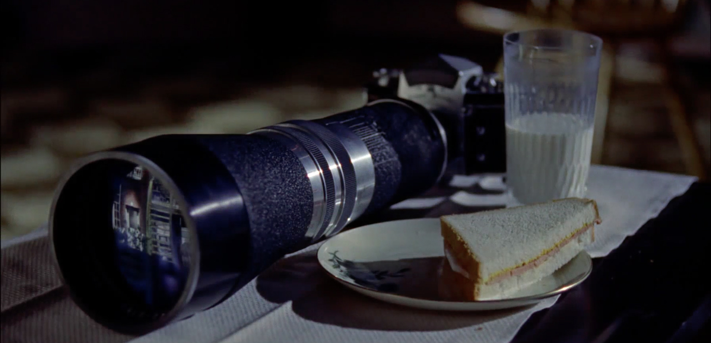
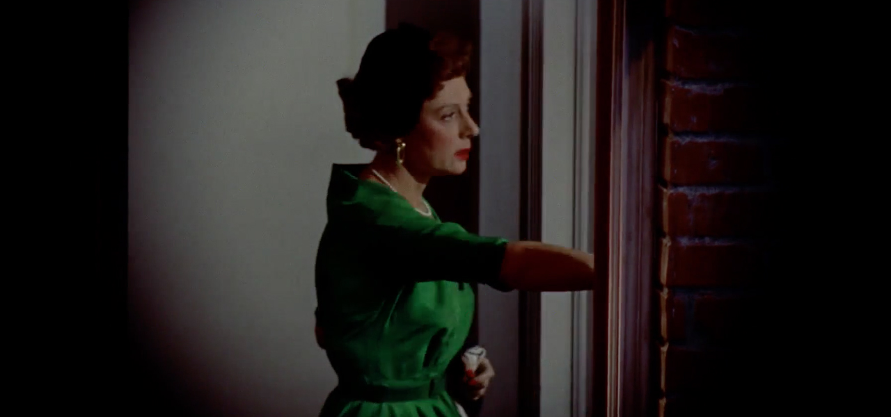
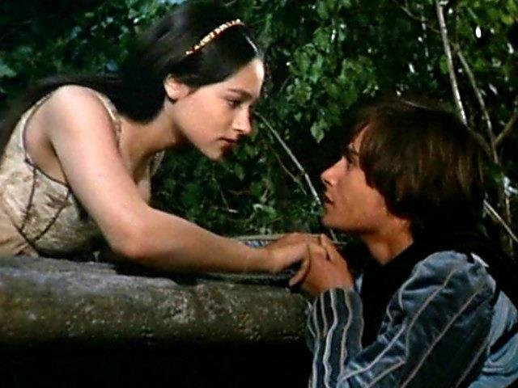

Thesis by Katsiaryna Banar, 2019
In my research, I am interested in examining the role of balconies in societies. The balcony is a platform enclosed by a wall or balustrade on the outside of a building, with access from an upper-floor window or door(1). The balcony has its construction, which makes it a limited space, yet the perspective is endless; it projects to the outside but floats above it. Unlike other similar structures such as terraces, loggia or streets in the sky, balconies are cellular and isolated(2). It is this isolation that gives a feeling of privacy for this delineated territory towering above a noisy street. A balcony is an exercise between public and private, silent and loud, foreground and the background. It is a place of tension between two opposing forces and in the manipulation of those forces, it shapes social relations. And in this binary exchange inherited in a very common architectural element, one can observe the omnipresence of dynamic transformation of self-recognition, that reproduces itself at every moment at any point(3). The balcony is cellular and isolated, with perfectly defined borders, yet it provides the capacity to act and structure meaning in a given environment. A balcony can be considered as a divider or a connector based on the function and its interpretation by the participants in the information exchange. Historically, a balcony has performed multiple roles: from the defensive, through representative towards the ceremonial and symbolical. Balconies underwent multiple changes during their existence and served as numerous diverse platforms for maintaining the needs of a particular time, its construction was changed accordingly. At present, balconies are still used in many religions as echoes of the former power.(4) A balcony has a vivid hierarchy and vertical position, which states the elevation of one over another: it gives a choice for the one on the balcony of where and how to be seen. It has a particular capacity and provides a higher ground; everything works in favor of the ones on the balcony: it provides access to the more information, it has a better sound distribution and a greater perspective. It's superior yet limited towards the inferior yet endless world. Standing on a balcony one has the privilege of a superior position, of privacy, significance, dominance, and broader view, yet mobility is limited. It is superior but simultaneously turned towards the inferior yet endless world. “What does it mean to be above or below in today’s rapidly urbanizing world?”(5), between the observer and the observed scene. This hierarchy is the representation of power. I want to examine the created tension and analyze how the dominant position of power provoked or affected the interpretation of actions and behaviors. I want to learn about the determining factors of geopolitical inequalities and the methods of translation of the information. In order to do so, the balcony will be examined on different levels such as etymological, physical, symbolical, and looked through the prism of the Balkans as they both share the common principles in their etymologies and the ways in which they are culturally constructed.(6) The balcony is not just a mundane object that decorates the city, but it is underlying greater reality and power. Thus, this thesis is a reading of the balcony. I know that something should look like this, and I expect it to behave in some specific way. But the beauty of virtual worlds lies in the fact that the behaviour of elements within it depends on the programmer’s imagination rather than on the way things happen on this Euclidian-Newtonian earth. If I drop an object in the virtual world, it might just go up or even multiply and go sideways — the laws of this world can be logical and consistent, but not necessarily with real physics. The symbols become the realityhere are certain characteristics of virtual worlds.
(3) In order to understand what the words balcony and Balkans have in common, one should look at the common perception of both of these terms. To simulate this one can go to the popular search engine and the first results for the word “balcony” generate images, which represent the balcony as an architectural form of luxury, an outdoor oasis, privacy and a form of escape. For the Balkans, according to popular online encyclopedia Britannica “The Balkans are usually characterized as comprising Albania, Bosnia and Herzegovina, Bulgaria, Croatia, Kosovo, Macedonia, Montenegro, Romania, Serbia, and Slovenia”(7). Although there is no universal agreement on the region’s components(8), paradoxically the mainstream culture has a very unified and generalized view on the region. If one runs the word “Balkans” through the Google image search, it will appear as the oasis of the blue seaside and green mountains, a perfect destination for the holidays. However, in order to be precise in the understanding of these terms to draw further conclusions, one should come to an etymological analysis. If to look at the origin of the word balcony, one can find in popular sources that the term derives from Old High German balcho ‘beam’. Another popular version is that it arises from Italian balcone ‘scaffold.(9)’ The term balcony can also possibly arise from Persian balk 'mud' with Turkish suffix -an, or another version is Persian بالا bālā 'big, high, upper, above' + خانه khāna 'house, upper house, room'(10) On the other hand, Balkans originated from Ottoman Turkish “balkan” meaning “chain of wooded mountains” can be related to Persian bālk 'mud', and the Turkish suffix an 'swampy forest' when Ottoman Turks arrived into the region. Also, Ottoman Turkish balkan, in its turn may relate back to the Persian word "balkane", which means high, above, or proud house.(11) Thus, both of these terms share mutual linguistic origins and based on this connection, it gives the ground for further investigation of the relation between these two concepts. And in doing so, one can see the relation between the reality and the invention: how both of these terms turn out to be the product of the cultural means. The Balkans has been described as the "other" of Europe. There has been a plan for the inclusion of the Balkans into the European Union, which extended to Bulgaria, Romania, and Croatia, along with Greece, and the rest of the region was ignored.(12)
The earliest mention of the term ‘Balkans’ appears in an early 14th-century Arab map, in which the Haemus mountains are referred to as Balkan. Thus, the peninsula is considered to be named for the Balkan Mountains, stretching for 530 km along the parallel in the eastern part of the peninsula on the territory of Bulgaria and eastern Serbia.(13) The name came into scientific use at the beginning of the XIX century. Then Johann August Zeune defined the Balkans as an independent peninsula of Europe.
(1) Since ancient times, these mountains were called Haemus Mons, Stara Planina, Catena Mundi or Catena del Mundo. They served as the northern border of Greece, Thrace, and Macedonia. The Greeks considered it as a border of the civilized world. August Zeune was also convinced that the Balkan Mountains extend continuously from the shores of the Black Sea west to the Alps. Later, the assertion of this concept was proved, but from the late XIX-early XX century, the concept of the "Balkans" is increasingly used to define a new geopolitical and geo-cultural region arising from the ruins of the Ottoman Empire in Europe. Denying the Balkan identity of Croatia, Mirela Slukan Altić argues that only Greece, as well as parts of Albania and Macedonia, have a vivid peninsular position. “There is no geographical basis in the isolation of the Balkan Peninsula; Balkans is an exclusively geopolitical category." (Slukan Altić, 2011) She argues that external geostrategies and researchers wrote the concept of the Balkans as a specific geopolitical space (with the corresponding identity). This discourse fits into Edward Said's famous concept of oriental studies.(1)
Orientalism as a practice, according to Said, is a systematic discipline by which European culture was able to manage - an even produce - the Orient politically, sociologically, militarily, ideologically, scientifically and imaginatively during the post-enlightenment period. Western representation and the social construction of the Orient as the ultimate “other" occurred in history, literature, art, music and popular culture. "If the Balkans had not existed, they would have been invented" was the verdict of Court Hermann Keyserling in his 1928 publication, Europe. This book traces the relationship between the reality and the invention. “A region geographically inextricable from Europe, yet culturally constructed as "the other," the Balkans have often served as a repository of negative characteristics upon which a positive and self-congratulatory image of the "European" has been built.” Balkans - a synonym for a reversion to the tribal, the backward, the primitive, the barbarian. Western society could not accept the reluctance of these countries to be “educated” according to western traditions. Its inhabitants do not care to conform to the standards of behavior devised as normative by and for the civilized world. "The standard Balkan male is uncivilized, primitive, crude, cruel, and, without exception, disheveled."
Traditionally buildings have been defined as art objects or technical objects by architectural discourse, though there is a social aspect that is inherent in the buildings as well, as they shape social relations and contain social meanings. Thus, a change in the built environment occur, it influences social behavior and the ways of perception. In its turn, it changes the way people approach urban planning and architecture. In this work the main focus lies not on the building as a whole, but on one specific part, namely the balcony: as an extension of the building with its own perspective, meaning and social relations. In order to understand these aspects, one should look into the history of the balcony and its origins. First notations describe balconies as functional elements. According to Viollet-le-Duc, such constructions were used in castles and fortresses as points for the observation and in case of the defense it gave a wide viewing angle and allowed to overtake the enemy faster as well as gave the advantage of being protected from the height. These balconies were erected over the city gates and on the fortress walls. The construction was a massive stone slab, projecting beyond the plane of the wall, and was protected from all sides by the same strong walls. Later, balconies began to be used in the inner courtyards of fortresses and palaces, which had unapproachable outer walls. The advantage of being above the crowd gave the balcony a new function. It becomes a power structure. Thus, royalty and aristocrats could turn to the townspeople without the need to go down into the crowd and their guard could react on possible attack faster. An example of a balcony as a device so inseparable from power will be the jharoka of Mughal architecture in India, which Shah Jahan forbids to his rivals.
In medieval Europe, balconies received new development as important architectural elements that adorn the surface of the walls of the buildings. Since then a great variety of new forms and techniques appear. The change of the function entailed changes in the construction; balconies became much lighter and were decorated with living climbing plants, furniture, and sculptures. It is interesting to notice that balconies have romantic connotations due to its associations with the monologue in Shakespeare’s play “Romeo and Juliet” even though the balcony was never mentioned in the original play, it was adopted as a symbol of romance in literature and theatre plays. In the late 19th century balconies are associated with the standards of health and hygiene. In the book of Thomas Mann “The Magic Mountain”, the author calls it “lofty and detached, inhabited by those too fragile for reality” referring to the European intellectual culture. The political balcony replaced the decorative balcony intended for a pleasant pastime as the First World War began. “It becomes an ideal stage from which to project mass spectacle. ” The leader had direct contact with the masses, yet being elevated above all and distinguishing clearly the hierarchy and importance of his figure. Even during the post-war time balconies kept its political reputations and were considered as political platforms. Balconies as such are apolitical, but in order to politicize them, they require activation. This was the case for the Palazzo Venezia, as its balcony became famous as the political platform for Mussolini, from which he announced the war against France and Britain on June 10, 1940. This balcony was kept away from the public until 2011 as an element of embarrassment after the war.
With time balconies regained their image as wide-open spaces predominantly for pastime leisure with fresh air, light, and visibility. The green balcony has become a symbol of ecological hope. Balconies have also gained in status and become luxurious elements that increase the value of real estate. Balconies have undergone multiple changes during their existence while serving numerous and diverse platforms based upon the needs of a particular period of time while its construction changed accordingly. At the present moment, balconies are still used in many religions as utilitarian infrastructures, symbols and as echoes of a former power. For example, a balcony is still used for ceremonial purposes when a newly elected pope gives his blessing (known as urbi et orbi) after the conclave at the St. Peter’s Basilica at Rome. What is important to note is that balconies are objective constructions that can be subjectified once given a particular perspective for looking at it. Both the structure itself as well as one’s perspective towards this structure influences its perception. Everyone can agree upon the fact that there is a balcony, but how someone perceives it is predetermined by social norms and status. In this case, a viewer’s position towards the balcony matters — understanding is the exercise between the state of perception and the state of things.
“Traditionally, power was what was seen, what was shown, and what was manifested...Disciplinary power, on the other hand, is exercised through its invisibility; at the same time it imposes on those whom it subjects a principle of compulsory visibility. In discipline, it is the subjects who have to be seen. Their visibility assures the hold of the power that is exercised over them. It is this fact of being constantly seen, of being able always to be seen, that maintains the disciplined individual in his subjection. And the examination is the technique by which power, instead of emitting the signs of its potency, instead of imposing its mark on its subjects, holds them in a mechanism of objectification. In this space of domination, disciplinary power manifests its potency, essentially by arranging objects. The examination is, as it were, the ceremony of this objectification.” One unavoidable fact of the balcony is that it will always be higher on display, thus creating a hierarchy between the observer and the observed scene. This hierarchy is the representation of power. Later in this chapter, I will expand on Foucault’s reading of power in relation to structure, in particular, his analysis of the panopticon, in relation to the broader reading of the balcony. Looking at power from the perspective of Michel Foucault – as a model of interpersonal relations that infiltrates society from top to bottom –then it becomes clear that well-known examples of architecture from the past more or less clearly embody the political model inherent to its place and time, stabilizing this notion in the form of an organized space. The main purpose of the Panopticon: to bring the prisoner into a state of conscious and constant visibility, which ensures the automatic functioning of power. It is a type of placement of bodies in space, the distribution of individuals relative to each other, hierarchical organization, the location of centers and channels of power, the definition of its tools and methods of intervention applicable in hospitals, factories, schools and prisons. According to Foucault, under the conditions of a panopticon, the distribution of power lies in the fact that it never intervenes, but is sent immediately, it forms a mechanism in which actions derive from one another. Without having any material tools, except architecture and geometry, power acts directly on individuals, it “gives to consciousness the power over consciousness”. Sergei Sitar, an architect and urban planner, in his book “Architecture and politics: From renaturalization to unlimited love”, leads the reader to the fact that architecture in its most archaic roots – like any other form of art – is inevitably linked with sacral, religion, spiritual rituals and practices, and is, in one way or another, aimed at the transformation of consciousness. This energy of religious devotion and attempt to transform is being appropriated and grounded by more tangible structures, such as political power. According to Sitar, within the architecture generated by any given local historical community two interrelated but distinct modes of self-awareness and self-representation should be distinguished. The first is implemented through the spatial fixation of specific economic and practical vital cycles. The second is the manifestation of a certain type of figurative and compositional thinking, which is also used to solve practical problems at a symbolic level. In the modern European tradition, this second dimension of an architectural work is identified as the “aesthetic” as a dimension of “beauty”. According to the author though, it might be fairer to define this as “ideological” or “educational”: beauty should be spoken of here rather in the way we talk about the beauty of mathematical evidence or the beauty of moral actions. This second dimension arises due to the fact that each architectural element not only solves a local, practical problem, but “seeks to establish some kind of high standard bar and offers a clear example with which the community can keep and transmit from generation to generation a certain effective system of thinking, perceived at the same time as “your own” (the basis of self-identity) and as universally true.” A perfect example of this symbolic manifestation in action within architecture is the world’s tallest building: the 830-metre tall Burj Khalifa in Dubai. Its opening was accompanied by 30-metre dancing fountains for the price of 225 million dollars, which are themselves in its turn, the tallest fountains in the world. Dubai appears as one of the most verticalised of cityscapes, with its continuously growing skyscrapers from the flat surface cutting through the vertical axis, proclaiming Dubai’s arrival as a ‘world-class’ or ‘global city’. Such towers are the manifestation of power and class division. The last floors serve no utilitarian function beyond accommodating lift shafts and service panels. “In Dubai, as elsewhere, this process rises towers that are often not even fully occupied by people: while projecting their symbolic value to the world, they often house capital, rather than human.” “Brand Dubai’ is thus all about linking the rising forest of steel, concrete, aluminum and glass to a collective architectural fantasy, a phantasmagoria of ‘supreme lifestyles’, for consumers, tourists, speculators and elites orchestrated through the complex machinations of global finance, global airline systems and global geopolitics (as well as, less visibly, organized crime, money laundering, financing of terrorism and sex and people trafficking). Vertical metaphors saturate – indeed constitute – these narratives.” [Like most words describing status, quality, power or achievement, ‘supreme’ is itself a vertical metaphor. Its origins are late fifteenth century (in the sense of ‘highest’): from Latin supremus, superlative of superus, ‘that which is above’.] The design of Burj Khalifa – its height and strength – might be considered as a representation of the absolute power of Dubai’s patriarchal ruler, the tall bearded figure of Mohammad bin Rashid Al Maktoum, who takes the role of monarch, prime minister and president at the same time and demands to be called ‘His Highness’ (HH). In the UAE, this ruler even has the power to personally dictate criminal sentences. Here it might be worth noting another vertical architectural element namely the minaret. This tower-like structure is punctuated by a platform at its apex, from which the muezzin recites the call to prayer for worship at the mosque. Although minarets have not historically been prescriptive in Islam, their symbolic role as a spiritual and cultural architectural landmark is well established across the world. It is also worth noting that the United Arab Emirates host one of the biggest concentrations of US military power on the planet. Al Dhafra Air Base in Abu Dhabi (an emirate to the west of Dubai) is one of the US Air Force’s most important drone and spy plane bases (Al Dhafra is only a hundred miles as the drone flies from Iran). Further along the coast to the west, the tiny Gulf state of Qatar, Al Udeid Air Base houses a huge ‘Airspace Control’ centre for the US military’s Central Command. The center gathers more than 800 hours of surveillance video over the war zone every day. “Such is the UAE’s strategic importance that plans are in place for an invisible ‘dome’ of strategic space above and around the city to be protected by one of the world’s most sophisticated missile defense systems – the Terminal High Altitude Area Defense (THAAD) system – as a deterrent to missile attack from Iran, just across the Gulf. These air defense missiles are designed to destroy attacking missiles in the upper atmosphere and even beyond the atmosphere’s limits.” The place of the former “power” or “status” superiority of those who rule over subordinates has firmly taken a new type of inequality, which can be described as “image-communication”, “medial” or “technological. Whether considering the Burj Khalifa, the Islamic minaret or the invisible towering vantage points of countless US drones in the night, the seemingly endless quest for elevation as a superior vantage point manifests as a power through perspective. While the balcony as an element of architecture proposes many functions, the extrapolation from both its physical attributes as well as its inherent social, cultural and political potential embodies the power to subjugate, coerce or seduce. (1) I know that something should look like this, and I expect it to behave in some specific way. But the beauty of virtual worlds lies in the fact that the behaviour of elements within it depends on the programmer’s imagination rather than on the way things happen on this Euclidian-Newtonian earth. If I drop an object in the virtual world, it might just go up or even multiply and go sideways — the laws of this world can be logical and consistent, but not necessarily with real physics. The symbols become the realityhere are certain characteristics of virtual worlds.
There are certain characteristics of virtual worlds. Computer simulations turned regular physics into information conveyed through symbols. I know that something should look like this, and I expect it to behave in some specific way. But thhere are certain characteristics of virtual worlds. Computer simulations turned regular physics into information conveyed through symbols. I know that something should look like this, and I expect it to behave in some specific way. But the beauty of virtual worlds lies in the fact that the behaviour of elements within it depends on the programmer’s imagination rather than on the way things happen on this Euclidian-Newtonian earth. If I drop an object in the virtual world, it might just go up or even multiply and go sideways — the laws of this world can be logical and consistent, but not necessarily with real physics. The symbols become the realityhere are certain characteristics of virtual worlds. Computer simulations turned regular physics into information conveyed through symbols.(1) I know that something should look like this, and I expect it to behave in some specific way. But the beauty of virtual worlds lies in the fact that the behaviour of elements within it depends on the programmer’s imagination rather than on the way things happen on this Euclidian-Newtonian earth. If I drop an object in the virtual world, it might just go up or even multiply and go sideways — the laws of this world can be logical and consistent, but not necessarily with real physics. The symbols become the realityhere are certain characteristics of virtual worlds.
“Drones linger over and annihilate people from above. Sociologists who have studied viewer comments to YouTube footage from drones of the targeting and killing of ‘insurgents’ note a widespread tendency. In keeping with deep traditions in Western culture and language, commentators see their top-down view as one of inherent superiority over the subjugated, less important, and racialised people – or even dehumanised non-people – far beneath the gaze.” The balcony was a prerogative for elite, upper-class due to the fact that only rich people could afford to have a second floor and the balcony. It created also the physical distance between the people on a street, and people “above”. Drawing on Lefèbvre, Stuart Elden offers a reading of space as a conceptual triad, as perceived, conceived, and lived, and as a physical, mental, and social construct that accommodates interpretations of space as both real and imagined.” As shown on the graph below, according to Lefèbvre, space is imagined when it is an instrumental space of social engineers and urban planners, meaning space as a mental construct. He refers to the physical space as real. Lived space is the one that has been produced and modified over the time and through its usage, space obtains symbolism and meaning.
Zygmunt Bauman in his work “Liquid Modernity” describes that any society is characterized by its social stratification, how individuals are divided into classes (there are always upper and lower classes, poor and rich).(36) The difference is only based on what criteria these tops and bottoms are determined. Stratification analyzed through the grammatical representation of social life could be represented (introduced) by the structured meaning systems consisting of general concepts and plans of actions attached to them. For instance, consider a few sets of such categories as the following: , , , , , , , … , , All of these categorisations refer to individual social objects, i.e., persons, but others refer to collective social objects, such as: , , , , These example sets of categories are not only the conceptual definitions of social objects; they are associated with “plans”, in the sense of Miller, Galanter and Pribram (1960) or “institutionalised production systems” (Fararo and Skvoretz 1984), in which the productions pertain to the way that action is conditional on the defined situation and the “places” of the actors in the institutional framework governing that situation”. Not only we associate general cultural expectations for differential attributes and behaviors of particular categories, but these categories create the core of the gender institution. Exceptions for the categorized objects include “stateless” persons that cannot be uniquely assigned to a nation-state category or a person whose gender identity blurs the boundaries between and . Once such institutions are created, they start shaping back the conditions they were created at. Lima balconies: correlation of cultural practices that resist and subvert gender role expectations for Lima’s women. According to Fernandez Munoz, Lima was known since the beginning of 16th century as the city of balconies. The balcony was a prerogative for elite, upper-class only due to the fact that only rich people could afford to have a second floor and the balcony. It created also the physical distance between the people on a street, and people “above”. Higgins connects Lima’s cultural and literal history with the city’s balconies to point up culture-specific race, class, and gender issues. He references urban policies intended to physically separate upper-class residents on the balconies from lower-class and indigenous street people. Symbolically, the balcony was considered as a feminine space in a house. Women were not intended to enter public spaces and balcony was the compromise to stay outside and inside, therefore to enter the public domain while keeping the privacy. "Women were granted limited visual and aural access to the street via the balcony, but the semi-enclosed structure protected (and also burred) them from direct contact with people and especially men at the lower level - in the literal and figurative sense of the term.”
Women spent most of the times gathering on balconies. By observing the outside world, watching without being seen, women gained influence and power in a space, which was originally intended for limitation. The architect Beatriz Pero states in her text “Concealed Gazes”: “The possibility that upper-class women’s could be watching the public space modified the behavior of the people they looked at, while the possibility of exerting control anonymously modified the behavior of the on-lookers themselves.” The difference in perspective and social inequality is also present in advanced representation system as cinema. Laura Mulvey, a British feminist film theorist, analysis mainstream cinema as a product of the patriarchal order. Her work “Visual Pleasure and Narrative Cinema” examines how the film form has been structured by the patriarchal society, in which the image of a woman is portrayed as a passive bearer of the meaning that is created by the men. According to the author, ways of seeing and pleasure in looking are formed through the male perspective and skilled manipulation of visual pleasure. The power of the men to actively look is manifested in the formation of the term “male gaze”, as not only to look at but also to feel superior towards the object of the gaze. Laura Mulvey describes the process in which the audience is brought closer to the experience by excluding the camera presence and denying that the audience is watching only the final product, and by doing so establishing the screen illusion. The formulation of this theory allows us to look at the method through which the particular construct is achieved. “The Man with the Movie Camera” is a film directed by Dziga Vertov in 1929, in which author shifts the focus of the viewer from the outcome to the process behind the construct. Film theorists often conclude that the main idea of this work is to reveal the methods of fabrication of meaning in cinema. In the conventional film, the point of view is represented as “neutral”, not visible, not being part of it, turning what you see into “reality". Vertov highlights the unseen and reverses the narrative making the viewer aware of the construction and blueprint of the movie. Alfred Hitchcock in the movie "Rear Window" (1964) uses similar skillful manipulation of the camera to shift the focus from the established morality to the perverted side of the process of identification.


In the movie, the audience can identify themselves with the main character and take the perspective of the male protagonist. Thus, the observed scene turns into the screen and the main character represents the audience. Our expectations associated with particular terms are visible and shaped throughout the pop culture - admired Juliet on elevation triggers comparison to sun and moon. Admiration is achieved through elevation; the viewers understand the position of Romeo and the created hierarchy between characters. Another example of such depiction is 1990 advertisement for Egoist by Chanel, Jean-Paul Goude. There is a facade of a hotel with numerous balconies. A woman on the balcony is bursting, screaming, and later more women are joining her crying: “Oh despair!, Oh my betrayed love!” From the central balcony, the man’s hand appear and place the cologne on the rail without displaying the figure of the man. All the women scream in a chorus of desire. The tagline for this advertisement is ”Chanel: For a Man." Despite the title, which personifies the male population, this advertisement can also be looked at from the perspective of emancipation, in which woman liberates herself by coming out of the room on the balcony and screaming. This act can be interpreted as the embodiment of the freedom, by revealing the woman’s feelings and taking the shift in a perspective, making her visible.
Jill Soloway in her speech at Toronto International Film Festival 2016 presented the term “female gaze” . Similarly, the female gaze is not about objectification but rather about empathy. It is more respectful since a female is not represented in a sensual or sexual way but rather turned into feelings. The female gaze is not a camera trick, it is about living the story (a movie) not through looking at a woman as an object but rather through looking at the world from her perspective, trying to see and feel what she does.

In this thesis, the dominant power is examined through the perspective of the spatial metaphor of verticality in order to understand how the constructed meaning can both shape and be shaped by the perspective, social relations and interpretations. A balcony is a construct that accommodates interpretations of space as both real and imagined. It has different meanings, altitudes, representations and interpretations of the above. Its meanings are created in mechanism in which actions derive from one another in a constant loop of structurizing meaning systems. The balcony hence is a construction, it is a cultural product. Balconies have different meanings, altitudes, representations, and therefore provide possibility for different ways of reading the balcony. Its meanings are created rather than given. Balcony, as a manifestation of power understood from the perspective of Michel Foucault – as a model of interpersonal relations that infiltrates society from top to bottom, provides a spatial metaphor of hierarchy and transmits a certain effective system of thinking, perceived at the same time as “your own” (the basis of self-identity) and as universally true. Constructed cultural categories define the expectations for differential attributes and behaviors of particular categories, simultaneously becoming the core of “institutionalized production systems”. The gender institution was vividly manifested in Lima, South Africa, where women were not allowed to enter public spaces. The balcony was the compromise to both outside and inside, therefore to enter public domain while watching without being seen and exercising own limitations in exchange of power of knowing. Women were not granted the access or existence in the public. The balcony is cellular and isolated, with perfectly defined borders, yet it provides the capacity to act and structure meaning in a given environment.
1. “Balcony | Definition of Balcony in English by Oxford Dictionaries.” Oxford Dictionaries | English, Oxford Dictionaries, en.oxforddictionaries.com/definition/balcony.
2. Bauman, Z. (2000). Liquid modernity. Cambridge, UK: Polity Press.
3. Burney, Shehla. “CHAPTER ONE: Orientalism: The Making of the Other.” Counterpoints, vol. 417, 2012, pp. 23–39.
4. Carter, F. (1977). An historical geography of the Balkans. London: Academic Press.
5. Colomina, Beatriz. Privacy and Publicity: Modern Architecture as Mass Media. Cambridge (Mass.): MIT Press, 2001.
6. Ehland, C., & Fischer, P. (2018). Resistance and the city: Negotiating urban identities: Race, class, and gender. Leiden: Brill Rodopi.
7. Elden, Stuart. There is a Politics of Space Because Space is Political: Henri Lefèbvre and the Production of Space.” Radical Philosophy Review 10.2(2007): 101-116.
8. Fararo, T. J., & Kosaka, K. (2010). Generating Images of Stratification: A formal Theory. Dordrecht: Kluwer Academic.
9. Foucault, Michel, 1926-1984. Discipline And Punish: the Birth of the Prison. New York : Pantheon Books, 1977. Print.
10. Graham, Stephen. Vertical: the City from Satellites to Bunkers. Verso Books, 2016.
11. Korta, Michal. Balkan Playground. Krakow: International Cultural Centre, 2017. 96 pp.
12. Mulvey, Laura. “Visual Pleasure and Narrative Cinema”. Screen 1975. Vol. 16 no3. Pp. 6-18.
13. Pero, Beatriz “Concealed Gazes”, Piet Zwart Institute.
14. Rear Window. (1954). [film] Directed by A. Hitchcock.
15. Sitar, S. (2017). Architecture and Politics. From renaturalization to unlimited love. Strelka Press. 38 pp.
16. Smith, Sabine H. and Bley, Miriam (2012) "Streets in the Sky: The Balconies of Lima and the Road to Intercultural Competence," Journal of Global Initiatives. Vol. 7, 2012, pp. 143-166.
17. Squires, Nick. “Mussolini Balcony to Be Reopened after Decades of Neglect.” The Telegraph, Telegraph Media Group, 15 Feb. 2011, www.telegraph.co.uk/news/worldnews/europe/italy/8325274/Mussolini-balcony-to-be-reopened-after-decades-of-neglect.html.
18. Stavrianos, L. (2000). The Balkans since 1453. New York: New York University Press.
19. Stojanovi´c, Mihailo D. The Great Powers and the Balkans: 1875-1878 /
20. Todorova, Maria. Imagining the Balkans. New York: Oxford University Press, 1997. xi + 257 pp.
21. Tom, Avermaete; Rem, Koolhaas; Irma, Boom; Amo Harvard Graduate School of Design (2014), “Balcony”. Marsilio, Venice.
22. Toronto International Film Festival (2016). Jill Soloway On The Female Gaze | Master Class [video file]. Retrieved from URL